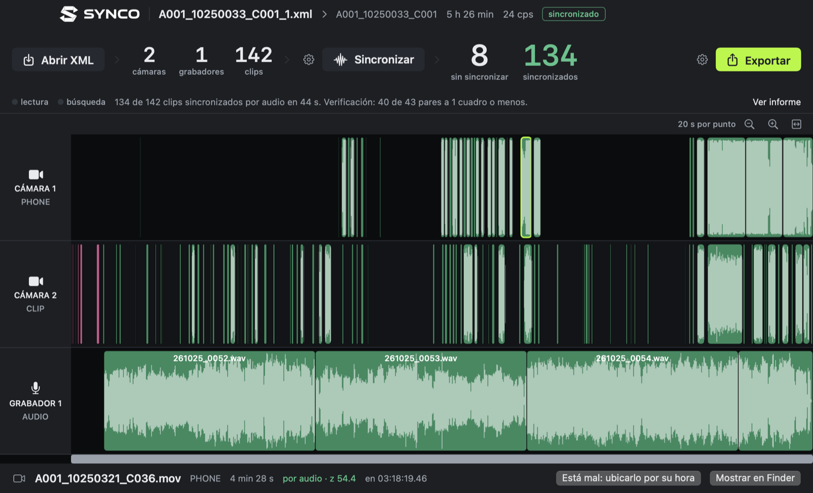

Un proyecto real: 2 cámaras, 1 grabador, 142 clips y 5 h 26 min de material.
Tres pasos, sin vueltas.
Synco no reemplaza a tu editor: le devuelve la línea de tiempo armada.
Exportá el XML
En Premiere, Resolve o Vegas: una pista por cámara o grabador, los clips sin ordenar, y Exportar › Final Cut Pro XML.
Sincronizá
Soltá el XML sobre Synco y tocá Sincronizar. Escucha cada clip y lo ubica contra el grabador y las otras cámaras.
Importá y editá
Exportar y, en tu editor, Archivo › Importar. Todo en su lugar, con tus recortes intactos.
Preciso, y te dice qué tan preciso.
Después de sincronizar, Synco compara entre sí los clips de cámaras distintas que quedaron superpuestos. Si coinciden, los dos están bien.
Los 8 clips restantes se grabaron antes de que arrancara el grabador o duran un segundo y medio: no tienen audio en común con nada. Synco los ubica por su hora de grabación y los marca con otro color para que los revises.
Pensado para cuando no hay timecode.
Solo con el audio
Compara cuándo pasan los sonidos, no cómo suenan: funciona aunque cada micrófono capte distinto.
Usa la hora de grabación
Lee la hora exacta de cada archivo, calcula el desfase del reloj de cada cámara y busca cada clip donde debería ir.
Azul, amarillo, rojo
Cada clip te dice qué tan seguro está: exacto, aproximado o sin encontrar. Una coincidencia dudosa nunca se acepta.
Archivos movidos
Si cambiaste de disco o de carpeta, elegís dónde están y los encuentra a todos por su nombre.
Corregí lo puntual
Marcá un clip que quedó mal y al volver a sincronizar se ubica por su hora. Etiquetas de color al exportar.
Se actualiza sola
Al abrirse se fija si hay una versión nueva, la baja, verifica que sea la publicada y se reemplaza.
Gratis, para siempre.
Para Mac, Windows y Linux, con la misma versión en los tres. Última versión.
Mac
macOS 13 o más nuevo, Apple silicon o Intel. Abrí el .dmg y arrastrá Synco a Aplicaciones.
Descargar para MacO desde la Terminal, sin avisos de seguridad:
curl -fsSL https://clipxel.github.io/Synco/install.sh | shWindows
Windows 10 u 11, 64 bits. Se instala para tu usuario, sin pedir permisos de administrador.
Descargar para WindowsSi aparece “Windows protegió tu PC”: Más información › Ejecutar de todas formas.
Lo que más se pregunta.
¿Con qué editores funciona?
Con los que exportan Final Cut Pro XML (la versión 7): Premiere Pro, DaVinci Resolve y Vegas. Final Cut Pro (FCPXML) y Media Composer (AAF) están en camino.
¿Funciona en Windows y Linux?
Sí. Es la misma versión con el mismo motor de sincronización en los tres sistemas: da exactamente el mismo resultado con el mismo proyecto. En Windows se instala para tu usuario; en Linux, el AppImage funciona en cualquier distribución.
¿Sube mis videos a algún lado?
No. Todo pasa en tu Mac: lee el audio de tus archivos, los compara y escribe el XML. Solo se conecta para fijarse si hay una versión nueva.
¿Qué pasa con los clips que no se sincronizan?
Synco lo busca de nuevo entre sus vecinos: en el hueco que dejan el clip anterior y el siguiente de la misma cámara, por fecha y hora. En Premiere cada clip queda con un color: azul si se encontró por su audio, amarillo si se encontró buscando cerca de su fecha (conviene mirarlo) y rojo si no tiene audio en común con nada y quedó ubicado por fecha y hora.
¿Toca mis archivos originales?
No. Lee los videos y el XML que exportaste, y guarda el resultado como un XML nuevo al lado. El audio leído queda guardado para que volver a sincronizar sea más rápido; se borra solo después de un tiempo.
¿Es gratis de verdad?
Sí, y de código abierto. Si te ahorra horas de trabajo, podés apoyarlo con una donación.
Apoyá Synco
Synco es gratis y siempre lo va a ser. Tu aporte ayuda a seguir mejorándolo y a sumar lo que viene: Final Cut Pro, AAF y más.
DonarEscribime
Novedades, dudas, errores o ideas: por Instagram. Desde la app, Ayuda › Reportar un problema te deja el mensaje listo.
@nanobrunetti